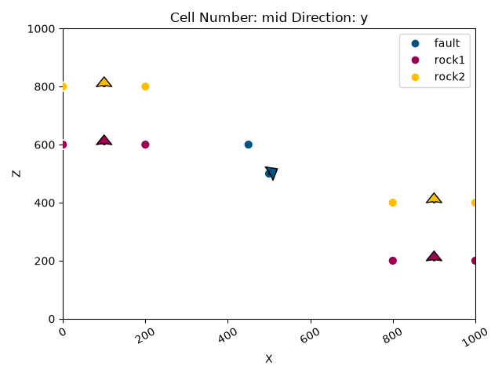
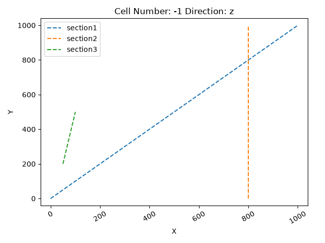
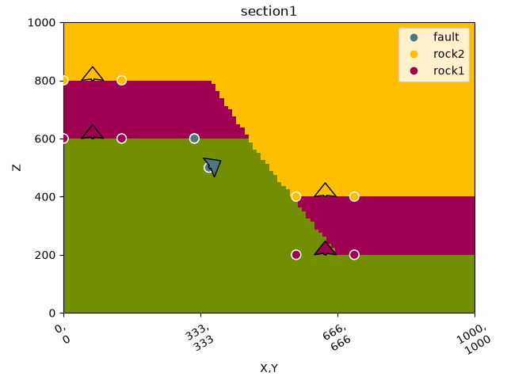
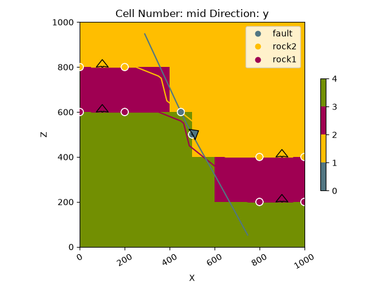
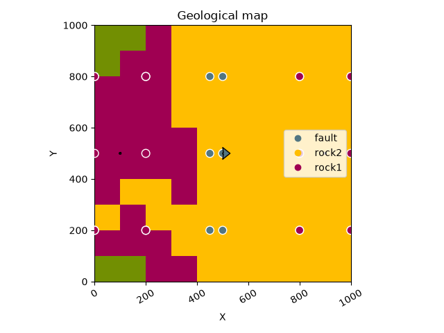
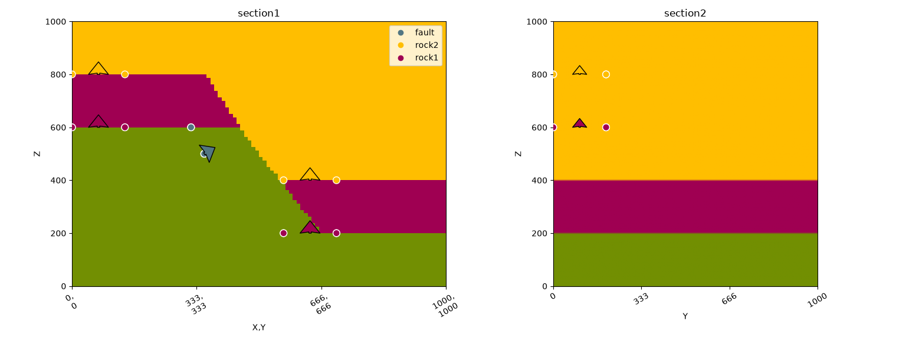
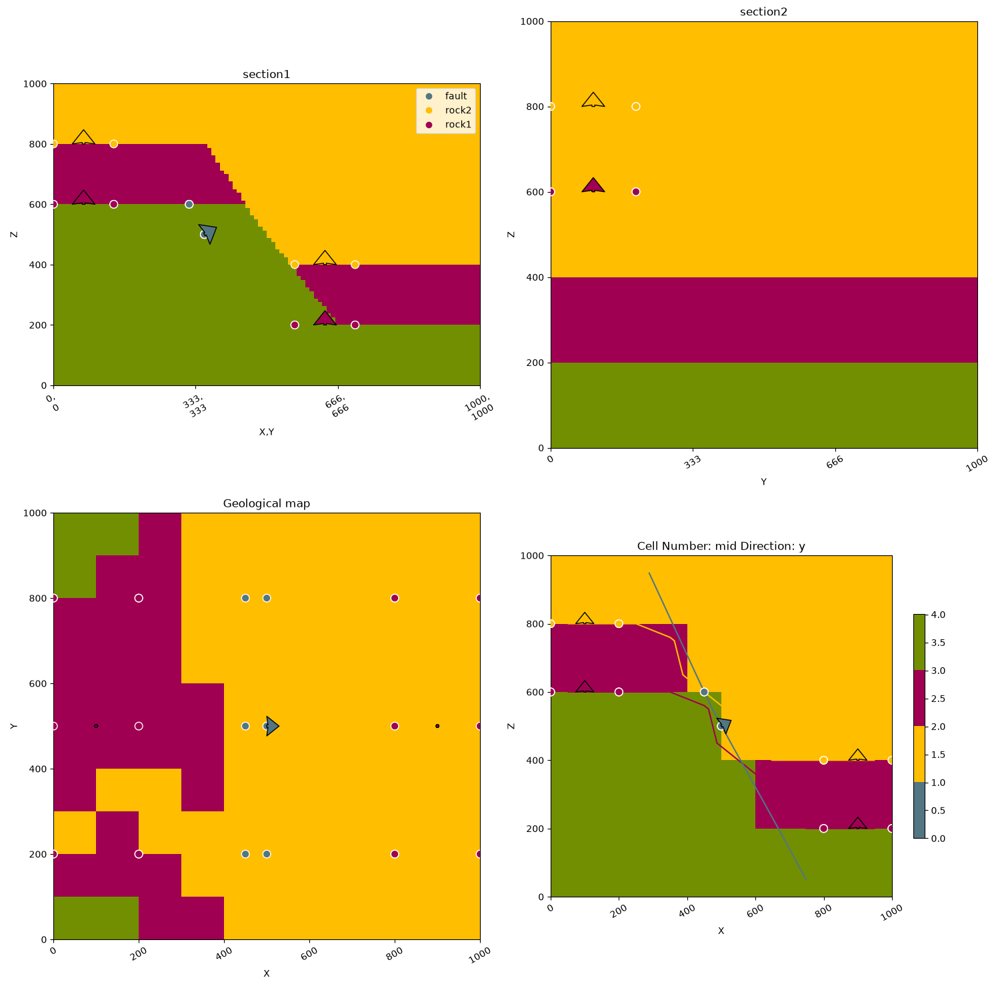

Note
Go to the end to download the full example code.
1.6: 2D Visualization.¶
import os
# Importing auxiliary libraries
import numpy as np
# Importing GemPy
import gempy as gp
import gempy_viewer as gpv
# sphinx_gallery_thumbnail_number = -1
np.random.seed(1515)
Model interpolation¶
Data Preparation
data_path = os.path.abspath('../../')
geo_data: gp.data.GeoModel = gp.create_geomodel(
project_name='viz_2d',
extent=[0, 1000, 0, 1000, 0, 1000],
resolution=[10, 10, 10],
refinement=4,
importer_helper=gp.data.ImporterHelper(
path_to_orientations=data_path + "/data/input_data/jan_models/model5_orientations.csv",
path_to_surface_points=data_path + "/data/input_data/jan_models/model5_surface_points.csv",
)
)
gp.set_topography_from_random(grid=geo_data.grid, d_z=np.array([500, 1000]))
Active grids: GridTypes.DENSE|TOPOGRAPHY|NONE
Topography(_regular_grid=RegularGrid(resolution=array([10, 10, 10]), extent=array([ 0., 1000., 0., 1000., 0., 1000.]), values=array([[ 50., 50., 50.],
[ 50., 50., 150.],
[ 50., 50., 250.],
...,
[950., 950., 750.],
[950., 950., 850.],
[950., 950., 950.]], shape=(1000, 3)), mask_topo=array([], shape=(0, 3), dtype=bool), _transform=None, _base_resolution=array([2, 2, 2])), values_2d=array([[[ 0. , 0. , 562.41208325],
[ 0. , 111.11111111, 678.69144966],
[ 0. , 222.22222222, 814.76576506],
[ 0. , 333.33333333, 787.73148507],
[ 0. , 444.44444444, 679.46990324],
[ 0. , 555.55555556, 610.52262081],
[ 0. , 666.66666667, 695.60132872],
[ 0. , 777.77777778, 643.1752034 ],
[ 0. , 888.88888889, 547.94484015],
[ 0. , 1000. , 500. ]],
[[ 111.11111111, 0. , 552.05957979],
[ 111.11111111, 111.11111111, 671.70334601],
[ 111.11111111, 222.22222222, 785.77377111],
[ 111.11111111, 333.33333333, 802.64722478],
[ 111.11111111, 444.44444444, 735.40066449],
[ 111.11111111, 555.55555556, 697.51403744],
[ 111.11111111, 666.66666667, 724.67190256],
[ 111.11111111, 777.77777778, 671.95824233],
[ 111.11111111, 888.88888889, 610.84270945],
[ 111.11111111, 1000. , 561.26041198]],
[[ 222.22222222, 0. , 628.32630052],
[ 222.22222222, 111.11111111, 655.12733102],
[ 222.22222222, 222.22222222, 800.25056852],
[ 222.22222222, 333.33333333, 872.05988921],
[ 222.22222222, 444.44444444, 730.74536298],
[ 222.22222222, 555.55555556, 689.49803472],
[ 222.22222222, 666.66666667, 740.88594247],
[ 222.22222222, 777.77777778, 779.46281932],
[ 222.22222222, 888.88888889, 747.93043419],
[ 222.22222222, 1000. , 695.35081617]],
[[ 333.33333333, 0. , 776.48537366],
[ 333.33333333, 111.11111111, 824.43440341],
[ 333.33333333, 222.22222222, 833.43146864],
[ 333.33333333, 333.33333333, 782.65097753],
[ 333.33333333, 444.44444444, 703.61068892],
[ 333.33333333, 555.55555556, 750.18348023],
[ 333.33333333, 666.66666667, 838.81325666],
[ 333.33333333, 777.77777778, 824.03364784],
[ 333.33333333, 888.88888889, 841.74272328],
[ 333.33333333, 1000. , 815.3840938 ]],
[[ 444.44444444, 0. , 810.72948763],
[ 444.44444444, 111.11111111, 814.43232454],
[ 444.44444444, 222.22222222, 840.28281595],
[ 444.44444444, 333.33333333, 750.71078299],
[ 444.44444444, 444.44444444, 688.13033779],
[ 444.44444444, 555.55555556, 702.82847883],
[ 444.44444444, 666.66666667, 843.78229982],
[ 444.44444444, 777.77777778, 946.96204174],
[ 444.44444444, 888.88888889, 970.51876294],
[ 444.44444444, 1000. , 872.33921496]],
[[ 555.55555556, 0. , 849.19752939],
[ 555.55555556, 111.11111111, 801.56643377],
[ 555.55555556, 222.22222222, 779.95724838],
[ 555.55555556, 333.33333333, 687.02591662],
[ 555.55555556, 444.44444444, 664.54767165],
[ 555.55555556, 555.55555556, 629.08043705],
[ 555.55555556, 666.66666667, 736.10737926],
[ 555.55555556, 777.77777778, 893.6966546 ],
[ 555.55555556, 888.88888889, 1000. ],
[ 555.55555556, 1000. , 917.72473865]],
[[ 666.66666667, 0. , 792.72473531],
[ 666.66666667, 111.11111111, 780.86685735],
[ 666.66666667, 222.22222222, 756.46511588],
[ 666.66666667, 333.33333333, 767.04155033],
[ 666.66666667, 444.44444444, 765.88329794],
[ 666.66666667, 555.55555556, 698.37639498],
[ 666.66666667, 666.66666667, 753.72835104],
[ 666.66666667, 777.77777778, 817.31176033],
[ 666.66666667, 888.88888889, 857.50999971],
[ 666.66666667, 1000. , 813.32887336]],
[[ 777.77777778, 0. , 655.83199406],
[ 777.77777778, 111.11111111, 728.28158144],
[ 777.77777778, 222.22222222, 742.26560642],
[ 777.77777778, 333.33333333, 798.30982799],
[ 777.77777778, 444.44444444, 724.35800641],
[ 777.77777778, 555.55555556, 664.27600056],
[ 777.77777778, 666.66666667, 708.60897142],
[ 777.77777778, 777.77777778, 760.57446696],
[ 777.77777778, 888.88888889, 736.98920937],
[ 777.77777778, 1000. , 668.1727696 ]],
[[ 888.88888889, 0. , 563.87411417],
[ 888.88888889, 111.11111111, 658.36823572],
[ 888.88888889, 222.22222222, 656.25213608],
[ 888.88888889, 333.33333333, 719.36180396],
[ 888.88888889, 444.44444444, 663.39848835],
[ 888.88888889, 555.55555556, 585.81630235],
[ 888.88888889, 666.66666667, 612.90684545],
[ 888.88888889, 777.77777778, 667.7142797 ],
[ 888.88888889, 888.88888889, 596.29762272],
[ 888.88888889, 1000. , 608.98292345]],
[[1000. , 0. , 542.65006454],
[1000. , 111.11111111, 623.27972 ],
[1000. , 222.22222222, 638.05439543],
[1000. , 333.33333333, 705.15596849],
[1000. , 444.44444444, 686.76128672],
[1000. , 555.55555556, 649.41337999],
[1000. , 666.66666667, 639.82329336],
[1000. , 777.77777778, 601.70645773],
[1000. , 888.88888889, 547.79987061],
[1000. , 1000. , 531.67197073]]]), source=None, values=array([[ 0. , 0. , 562.41208325],
[ 0. , 111.11111111, 678.69144966],
[ 0. , 222.22222222, 814.76576506],
[ 0. , 333.33333333, 787.73148507],
[ 0. , 444.44444444, 679.46990324],
[ 0. , 555.55555556, 610.52262081],
[ 0. , 666.66666667, 695.60132872],
[ 0. , 777.77777778, 643.1752034 ],
[ 0. , 888.88888889, 547.94484015],
[ 0. , 1000. , 500. ],
[ 111.11111111, 0. , 552.05957979],
[ 111.11111111, 111.11111111, 671.70334601],
[ 111.11111111, 222.22222222, 785.77377111],
[ 111.11111111, 333.33333333, 802.64722478],
[ 111.11111111, 444.44444444, 735.40066449],
[ 111.11111111, 555.55555556, 697.51403744],
[ 111.11111111, 666.66666667, 724.67190256],
[ 111.11111111, 777.77777778, 671.95824233],
[ 111.11111111, 888.88888889, 610.84270945],
[ 111.11111111, 1000. , 561.26041198],
[ 222.22222222, 0. , 628.32630052],
[ 222.22222222, 111.11111111, 655.12733102],
[ 222.22222222, 222.22222222, 800.25056852],
[ 222.22222222, 333.33333333, 872.05988921],
[ 222.22222222, 444.44444444, 730.74536298],
[ 222.22222222, 555.55555556, 689.49803472],
[ 222.22222222, 666.66666667, 740.88594247],
[ 222.22222222, 777.77777778, 779.46281932],
[ 222.22222222, 888.88888889, 747.93043419],
[ 222.22222222, 1000. , 695.35081617],
[ 333.33333333, 0. , 776.48537366],
[ 333.33333333, 111.11111111, 824.43440341],
[ 333.33333333, 222.22222222, 833.43146864],
[ 333.33333333, 333.33333333, 782.65097753],
[ 333.33333333, 444.44444444, 703.61068892],
[ 333.33333333, 555.55555556, 750.18348023],
[ 333.33333333, 666.66666667, 838.81325666],
[ 333.33333333, 777.77777778, 824.03364784],
[ 333.33333333, 888.88888889, 841.74272328],
[ 333.33333333, 1000. , 815.3840938 ],
[ 444.44444444, 0. , 810.72948763],
[ 444.44444444, 111.11111111, 814.43232454],
[ 444.44444444, 222.22222222, 840.28281595],
[ 444.44444444, 333.33333333, 750.71078299],
[ 444.44444444, 444.44444444, 688.13033779],
[ 444.44444444, 555.55555556, 702.82847883],
[ 444.44444444, 666.66666667, 843.78229982],
[ 444.44444444, 777.77777778, 946.96204174],
[ 444.44444444, 888.88888889, 970.51876294],
[ 444.44444444, 1000. , 872.33921496],
[ 555.55555556, 0. , 849.19752939],
[ 555.55555556, 111.11111111, 801.56643377],
[ 555.55555556, 222.22222222, 779.95724838],
[ 555.55555556, 333.33333333, 687.02591662],
[ 555.55555556, 444.44444444, 664.54767165],
[ 555.55555556, 555.55555556, 629.08043705],
[ 555.55555556, 666.66666667, 736.10737926],
[ 555.55555556, 777.77777778, 893.6966546 ],
[ 555.55555556, 888.88888889, 1000. ],
[ 555.55555556, 1000. , 917.72473865],
[ 666.66666667, 0. , 792.72473531],
[ 666.66666667, 111.11111111, 780.86685735],
[ 666.66666667, 222.22222222, 756.46511588],
[ 666.66666667, 333.33333333, 767.04155033],
[ 666.66666667, 444.44444444, 765.88329794],
[ 666.66666667, 555.55555556, 698.37639498],
[ 666.66666667, 666.66666667, 753.72835104],
[ 666.66666667, 777.77777778, 817.31176033],
[ 666.66666667, 888.88888889, 857.50999971],
[ 666.66666667, 1000. , 813.32887336],
[ 777.77777778, 0. , 655.83199406],
[ 777.77777778, 111.11111111, 728.28158144],
[ 777.77777778, 222.22222222, 742.26560642],
[ 777.77777778, 333.33333333, 798.30982799],
[ 777.77777778, 444.44444444, 724.35800641],
[ 777.77777778, 555.55555556, 664.27600056],
[ 777.77777778, 666.66666667, 708.60897142],
[ 777.77777778, 777.77777778, 760.57446696],
[ 777.77777778, 888.88888889, 736.98920937],
[ 777.77777778, 1000. , 668.1727696 ],
[ 888.88888889, 0. , 563.87411417],
[ 888.88888889, 111.11111111, 658.36823572],
[ 888.88888889, 222.22222222, 656.25213608],
[ 888.88888889, 333.33333333, 719.36180396],
[ 888.88888889, 444.44444444, 663.39848835],
[ 888.88888889, 555.55555556, 585.81630235],
[ 888.88888889, 666.66666667, 612.90684545],
[ 888.88888889, 777.77777778, 667.7142797 ],
[ 888.88888889, 888.88888889, 596.29762272],
[ 888.88888889, 1000. , 608.98292345],
[1000. , 0. , 542.65006454],
[1000. , 111.11111111, 623.27972 ],
[1000. , 222.22222222, 638.05439543],
[1000. , 333.33333333, 705.15596849],
[1000. , 444.44444444, 686.76128672],
[1000. , 555.55555556, 649.41337999],
[1000. , 666.66666667, 639.82329336],
[1000. , 777.77777778, 601.70645773],
[1000. , 888.88888889, 547.79987061],
[1000. , 1000. , 531.67197073]]), resolution=(10, 10), raster_shape=())
gpv.plot_2d(geo_data)

<gempy_viewer.modules.plot_2d.visualization_2d.Plot2D object at 0x7f5820c49050>
section_dict = {'section1': ([0, 0], [1000, 1000], [100, 80]),
'section2': ([800, 0], [800, 1000], [150, 100]),
'section3': ([50, 200], [100, 500], [200, 150])}
gp.set_section_grid(geo_data.grid, section_dict)
gpv.plot_section_traces(geo_data)

Active grids: GridTypes.DENSE|TOPOGRAPHY|SECTIONS|NONE
<function plot_section_traces at 0x7f582f2ef8a0>
geo_data.grid.sections
gp.map_stack_to_surfaces(
gempy_model=geo_data,
mapping_object={
"Fault_Series": 'fault',
"Strat_Series": ('rock2', 'rock1')
}
)
gp.set_is_fault(
frame=geo_data.structural_frame,
fault_groups=['Fault_Series']
)
geo_data.grid.active_grids
<GridTypes.DENSE|TOPOGRAPHY|SECTIONS|NONE: 1050>
Setting Backend To: AvailableBackends.PYTORCH
GPU requested but unavailable; falling back to CPU (GEMPY_GPU_FALLBACK=True)
Setting Backend To: AvailableBackends.PYTORCH
new plotting api
gpv.plot_2d(geo_data, section_names=['section1'])

/opt/buildAgent/work/3a8738c25f60c3c9/venv/lib/python3.14/site-packages/gempy_viewer/API/_plot_2d_sections_api.py:112: UserWarning: Section contacts not implemented yet. We need to pass scalar field for the sections grid
warnings.warn(
<gempy_viewer.modules.plot_2d.visualization_2d.Plot2D object at 0x7f5821252950>
Plot API¶
If nothing is passed, a Plot2D object is created and therefore you are in the same situation as above:
p3 = gpv.plot_2d(geo_data)

Alternatively you can pass section_names, cell_numbers + direction or any combination of the above:
gpv.plot_2d(geo_data, section_names=['topography'])

/opt/buildAgent/work/3a8738c25f60c3c9/venv/lib/python3.14/site-packages/gempy_viewer/API/_plot_2d_sections_api.py:112: UserWarning: Section contacts not implemented yet. We need to pass scalar field for the sections grid
warnings.warn(
<gempy_viewer.modules.plot_2d.visualization_2d.Plot2D object at 0x7f580ed26cd0>
gpv.plot_2d(geo_data, section_names=['section1'])

/opt/buildAgent/work/3a8738c25f60c3c9/venv/lib/python3.14/site-packages/gempy_viewer/API/_plot_2d_sections_api.py:112: UserWarning: Section contacts not implemented yet. We need to pass scalar field for the sections grid
warnings.warn(
<gempy_viewer.modules.plot_2d.visualization_2d.Plot2D object at 0x7f5820c456d0>
gpv.plot_2d(geo_data, section_names=['section1', 'section2'])

/opt/buildAgent/work/3a8738c25f60c3c9/venv/lib/python3.14/site-packages/gempy_viewer/API/_plot_2d_sections_api.py:112: UserWarning: Section contacts not implemented yet. We need to pass scalar field for the sections grid
warnings.warn(
<gempy_viewer.modules.plot_2d.visualization_2d.Plot2D object at 0x7f580edb54d0>
gpv.plot_2d(geo_data, figsize=(15, 15), section_names=['section1', 'section2', 'topography'], cell_number='mid')

/opt/buildAgent/work/3a8738c25f60c3c9/venv/lib/python3.14/site-packages/gempy_viewer/API/_plot_2d_sections_api.py:112: UserWarning: Section contacts not implemented yet. We need to pass scalar field for the sections grid
warnings.warn(
<gempy_viewer.modules.plot_2d.visualization_2d.Plot2D object at 0x7f57bff68f50>
Total running time of the script: (0 minutes 2.527 seconds)